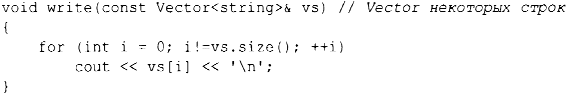

⇐6.1 Введение 6.2.1 Ограниченные аргументы шаблона (С++20)⇒
6.2. Параметризованные типы
Мы можем обобщить наш вектор элементов типа douЫe до вектора элементов произвольного типа, сделав его шаблоном и заменив конкретный тип douЫe параметром типа. Например:
Префикс template<typename Т> делает Т параметром объявления, префиксом которого он является. Это С++-версия математического выражения ∀Т - "для всех Т" (или, точнее, "для всех типов т"). Если вы хотите выразить математическое выражение "для всех Т, таких, что Р(Т)", вам нужны концепты (§6.2.1, §7.2). Применение ключевого слова class для введения параметра типа эквивалентно использованию t ypename, и в старом коде часто встречается префикс template<class Т>.
Функции-члены могут быть определены аналогично:
С учетом вышесказанного можно определить объекты Vector следующим образом:
Пара символов >> в Vector<list<int>> завершает вложенные аргументы шаблона; это не ошибочно размещенный оператор ввода.
Использовать Vector можно следующим образом:
Чтобы обеспечить поддержку цикла for по диапазону для нашего Vector, мы должны определить подходящие функции begin () и end ():
Теперь можно записать:

Аналогично можно определить списки, векторы, отображения (т.е. ассоциативные массивы), неупорядоченные отображения (т.е. хеш-таблицы) и тому подобное как шаблоны (глава 11, "Контейнеры").
Шаблоны представляют собой механизм времени компиляции, поэтому их использование не требует дополнительных затрат времени по сравнению с написанным вручную кодом. Фактически код, созданный для Vector <double>, идентичен коду, сгенерированному для версии Vector из главы 4, "Классы··. Кроме того, код, сгенерированный для vector<double> из стандартной библиотеки, скорее всего, будет лучшего качества (потому что в его реализацию вложено больше усилий).
Шаблон плюс набор аргументов шаблона называется инстанцированием или специализацией. В конце процесса компиляции, во время инстанцирования, генерируется код для каждого инстанцирования, используемого в программе (§7.5). Для сгенерированного кода выполняются проверки типов, так что этот код оказывается таким же безопасным с точки зрения типов, как и написанный вручную. К сожалению, такая проверка часто выполняется в конце процесса компиляции, во время инстанцирования.